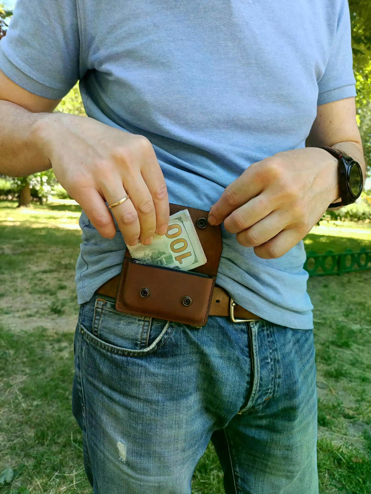

Horizontal Leather Belt Pouch, Low Profile EDC Card Holder, Stealth Belt Wallet, Gift for him, Alex Polak
A handmade leather belt pouch designed to organize coins, cards and small everyday essentials in a compact EDC accessory.
Price: $47.2 USD
Buy on EtsyInternational customers are responsible for any customs duties, import taxes, VAT, brokerage fees, or other charges imposed by their country's customs authorities unless duties and taxes are explicitly stated as prepaid (DDP). Shipping Policy
Handmade Leather EDC
Keep your everyday essentials close without overfilling your pockets. This handmade horizontal leather belt pouch is designed to sit parallel to your belt line, creating a compact, low-profile way to carry coins, cards, folded cash and other small EDC essentials.
Made from 100% Crazy Horse leather, the pouch is cut, molded and finished with durable saddle stitching. Its compact 2.75-inch (70 mm) height, 4.33-inch (110 mm) width and 0.79-inch (20 mm) depth provide room for 8–10 plastic cards and folded cash while maintaining a streamlined profile.
Two durable antique brass snaps help keep your belongings secure while allowing quick access when needed. The pouch fits standard belts up to 1.57 inches wide (up to 40 mm), making it a practical alternative to bulky pockets or a larger bag.
Presented in a custom handcrafted textile gift pouch with a leather drawstring, it makes a useful gift for him, an EDC enthusiast or anyone who prefers carrying only the essentials.
Product Details
- Material: 100% Crazy Horse leather
- Dimensions: 2.75 inches (70 mm) high × 4.33 inches (110 mm) wide × 0.79 inches (20 mm) deep
- Belt compatibility: Fits standard belts up to 1.57 inches wide (up to 40 mm)
- Capacity: Holds 8–10 plastic cards and folded cash
- Storage: Suitable for coins, cards and small everyday essentials
- Closure: Two durable antique brass snaps
- Construction: Cut, molded and stitched with saddle stitching
- Gift packaging: Custom handcrafted textile gift pouch with a leather drawstring
Get This Handmade Leather Product
This handmade leather product is available through the LeatherBagsKingdom Etsy shop.
Buy on Etsy